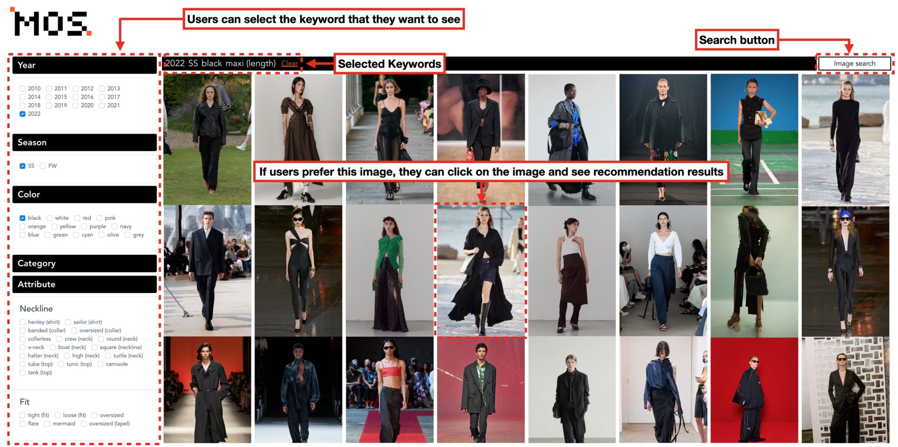
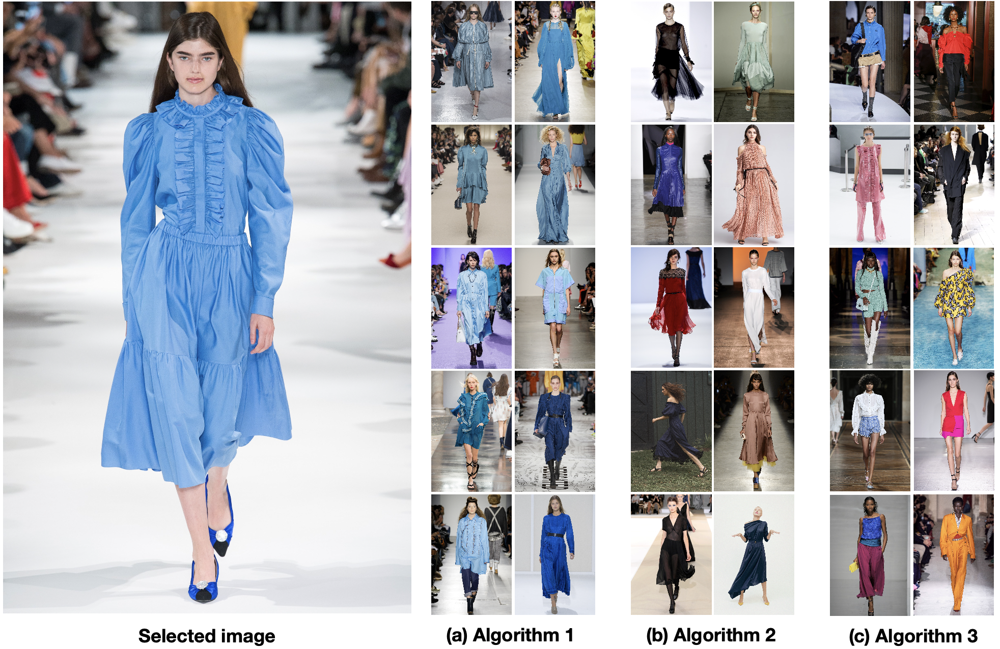

CHI 2023 · Late-Breaking Work
Fashion experts and non-experts want different recommendations
1Hanyang University
Recommender systems usually give everyone the same mix of results. We built My Own Style (MOS), a fashion dashboard that shows three recommendation sets side by side, and asked 166 people at a design festival to compare them. People with more fashion knowledge spotted the most similar set more reliably and preferred it, while people with less leaned toward more diverse results.
- First author
- Recommender systems
- Human–AI interaction
FIG. 01
Share of participants who preferred the high-similarity recommendations (Algorithm 1)
01 / The question
Recommender systems support many everyday decisions, but people differ in how they understand and judge what an algorithm shows them. We asked whether domain expertise, here fashion knowledge and interest, is one of the things that shapes that judgment.
Understanding. Do domain experts perceive and understand recommendation results differently from non-experts?
Preference. Do domain experts prefer different kinds of recommendation results?
If the answer to both is yes, a single one-size-fits-all recommender is the wrong design. The balance between similarity and diversity should depend on who the user is.
02 / The MOS dashboard
My Own Style (MOS) takes an input outfit image and recommends fashion items with three algorithms that sit at different points between similarity and diversity.
Data. MOS draws on 699,613 fashion images: 401,825 runway images from 2010–2022, 48,533 public fashion images, and 249,255 street fashion photographs.
Three algorithms. Image feature-based recommendation (Algorithm 1) gives high similarity. Fashion element-based recommendation (Algorithm 2) balances similarity and diversity. Random-based recommendation (Algorithm 3) gives high diversity.
Interface. Users search by year, season, color, and fashion element. Selecting an image shows a breakdown of its fashion elements next to the top 10 recommendations from each algorithm, side by side, so the three sets can be compared directly (FIG. 02).
FIG. 02

FIG. 03

03 / The study
Participants. We recruited 166 visitors at a design festival booth: 35 fashion experts, 59 designers, and 72 members of the general public.
Expertise groups. Each participant rated their interest in fashion, knowledge of fashion, and perceived expertise. From these Fashion Characteristics (FC) ratings we formed a High FC group of 100 fashion-knowledgeable participants and a Low FC group of 66 general users.
Tasks. Using MOS, participants saw results from all three algorithms and picked which set was most similar to the input, which was most diverse, and which they preferred overall. The first two picks measure understanding; the last measures satisfaction.
04 / What we found
Experts recognize similarity better. High FC participants correctly identified Algorithm 1 as the most similar set 78% of the time, compared with 64% for Low FC participants. Domain knowledge seems to help people see fine visual similarities between fashion items.
Diversity is easy for everyone. The two groups did not differ significantly in identifying the most diverse set. Noticing that items are different appears to depend less on domain knowledge.
Experts prefer similar results. In the High FC group, 71% preferred Algorithm 1 and 29% preferred one of the more diverse sets (Algorithms 2 and 3) (FIG. 01).
Non-experts lean toward diversity. In the Low FC group, 52% preferred a diverse set and 48% preferred the similar one. Diverse results may help newcomers discover styles they would not have searched for.
What this means for design. Experts value precision and visual coherence; novices value variety and exploration. A fashion recommender could adjust its balance of similarity and diversity to the user's expertise instead of serving everyone the same mix.
05 / Publication
- Title
- A Study on User Perception and Experience Differences in Recommendation Results by Domain Expertise: The Case of Fashion Domains
- Authors
- Taehyung Noh, Haein Yeo, Myungjin Kim, Kyungsik Han
- Venue
- Extended Abstracts of the 2023 CHI Conference on Human Factors in Computing Systems (CHI EA ’23), Late-Breaking Work
- Paper
- ACM Digital Library
- Video
- YouTube
@inproceedings{noh2023study,
title={A study on user perception and experience differences in recommendation results by domain expertise: the case of fashion domains},
author={Noh, Taehyung and Yeo, Haein and Kim, Myungjin and Han, Kyungsik},
booktitle={Extended abstracts of the 2023 CHI conference on human factors in computing systems},
pages={1--7},
year={2023}
}